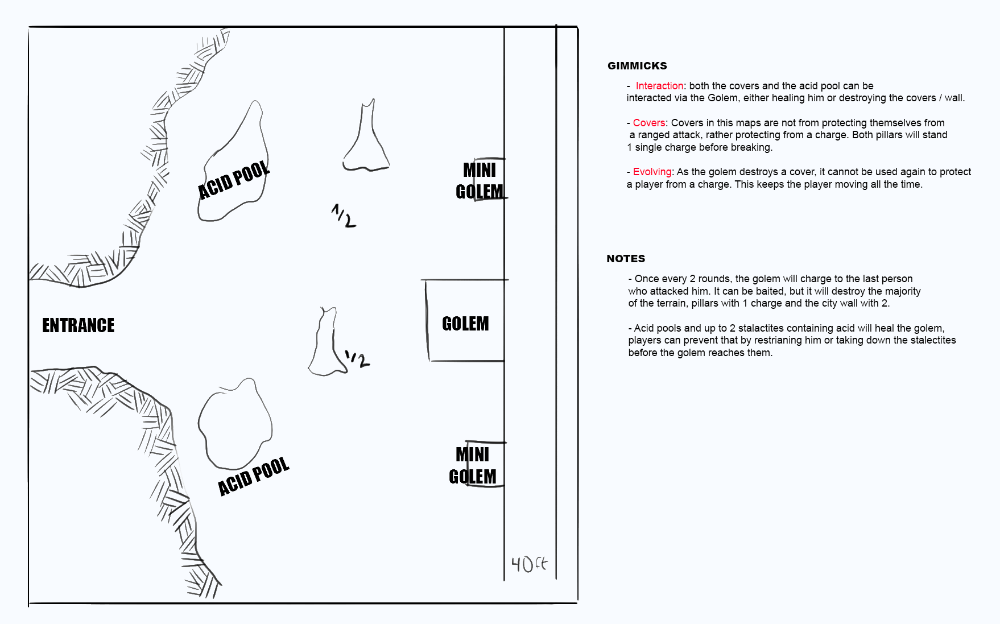

Aldura's Gate
Context
This is the entrance to Aldura, the Founding City. It was the birth of civilization, hundreds of years ago.
Creatures
In this scenario, the players will be fighting one of the massive sculptures that is in reality a slightly modified clay golem, along with 2 other smaller statues that act as minions of the golem. The idea is that the golem can charge forward, breaking pillars and, if baited correctly, even the wall to make it easier for the player to run into the city. The golem also has acid pools around him, so he can also try to heal himself at some times, making the players shift their strategy to stop him or maybe seize that opportunity to run into the city.
Gimmicks
For this map, I went with the interaction, cover and evolving gimmicks:
- Interaction: The huge golem can interact in a unique way with pillars and the wall of the map: destroying them! Due to its low intelligence, players can bait the golem to interact where they want him to charge to.
- Covers: This map offers covers, not from ranged attacks, but as a protection from the golem charging.
- Evolving: Every round, the golem will either charge into someone, potentially breaking the scenary, or try breaking the stalactites from which the acid drips, potentially healing himself. This makes that the players always are on the move and trying to bait the golem into charging specfic spots.
Sketch
This was the first sketch of the battle map. I focused on putting the objective they wanted right in front of them: the city wall. As they enter the cavern, the golems appear as mear statues, but when approched, they attack. Even thought the map doesn't cover the north and south parts, they could run there theoretically, but they will see more and more statues alongside the wall, making it a bad idea waking up even more golems.
Final Map